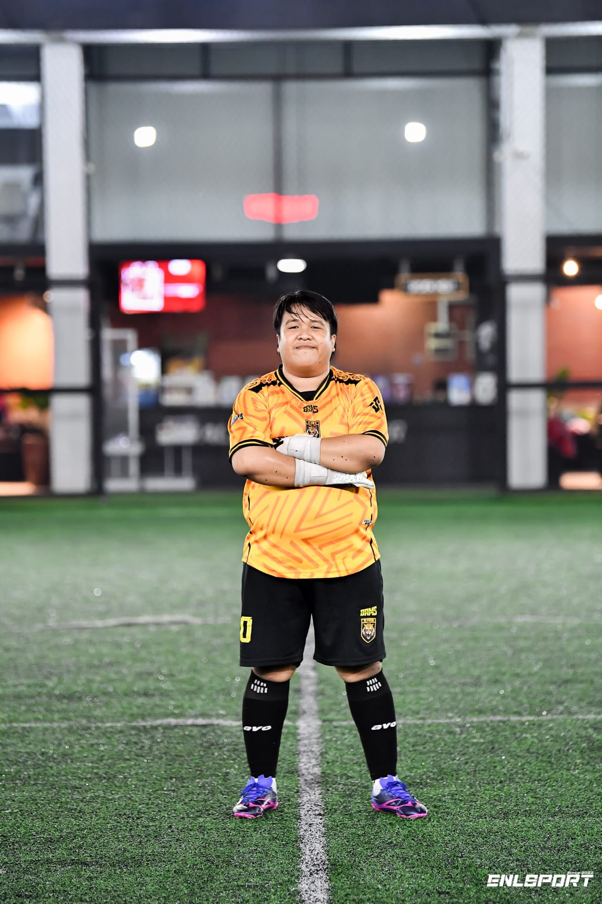
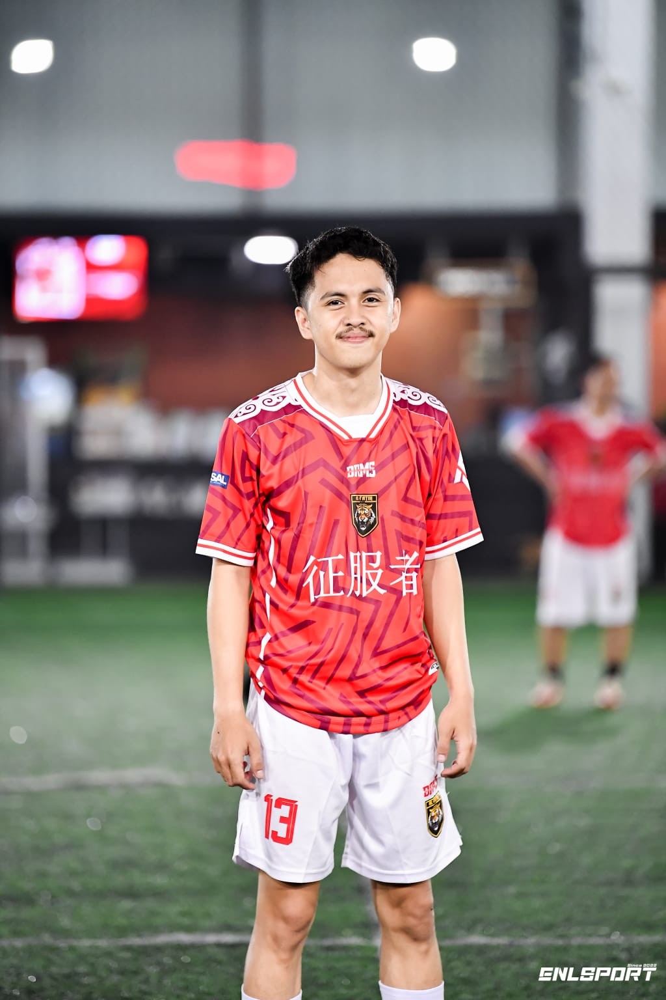

Tim Pelatih

Bintang Surya
Head Coach

GK Coach
Goalkeeper Coach

Assistant Coach
Assistant Coach
Elite Futsal Development Program
AL-FATIH Academy adalah akademi futsal yang berkomitmen penuh dalam membentuk generasi pemain yang tidak hanya unggul secara teknik, tetapi juga kuat secara mental, disiplin dalam karakter, dan siap menghadapi tantangan masa depan.
Kami percaya bahwa pemain hebat tidak lahir secara instan. Mereka dibentuk melalui proses, konsistensi, kerja keras, dan lingkungan yang positif. Oleh karena itu, setiap program latihan dirancang untuk mengembangkan kemampuan teknik dasar yang kuat, pemahaman taktik, kecerdasan bermain, serta mental juara yang tangguh.
AL-FATIH Academy tidak hanya melatih cara bermain futsal, tetapi juga menanamkan nilai disiplin, tanggung jawab, kepemimpinan, serta sikap sportif dalam setiap pertandingan. Kami membangun karakter, membentuk mental pemenang, dan menyiapkan pemain untuk mampu bersaing di tingkat daerah, nasional, hingga profesional.
Setiap pemain yang bergabung adalah investasi masa depan. Kami berkomitmen membangun hari ini untuk kemenangan di masa depan.
AL-FATIH Academy – Membangun Hari Ini, Menang di Masa Depan.
Dasar teknik & koordinasi.
Pengembangan skill & taktik.
Persiapan kompetisi & elite class.
Head Coach
Goalkeeper Coach
Assistant Coach